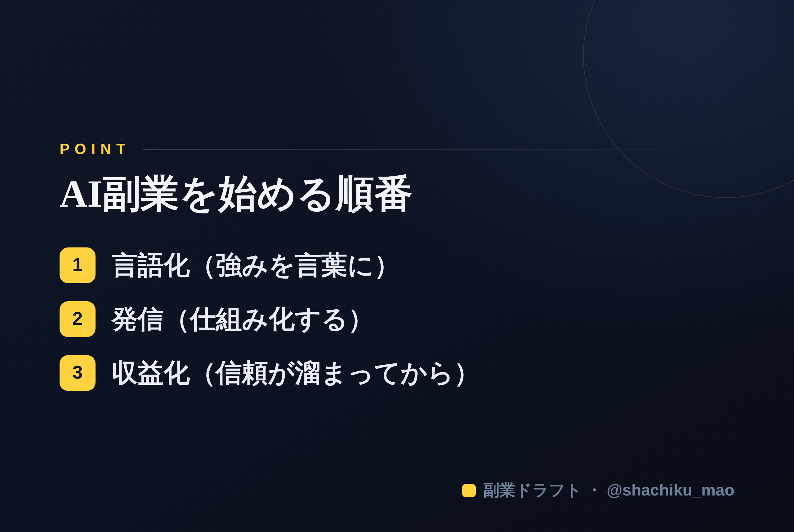

1. 「タイトルをコピー」→ note のタイトル欄に貼る
2. オレンジのラベルの画像（見出し画像）を note の見出し画像に設定
3. 「本文1をコピー」→ note本文に貼る
4. 青いラベルの位置（本文の途中）に、同じ名前の画像をアップして挿入
5. 「本文2をコピー」→ 続きを貼る
※ 見出しが普通の文字になったら、その行を選んで「大見出し」に設定してください
検索キーワード狙い：「AI 副業 始め方」「会社員 副業 AI」「AI 副業 初心者」
目的：検索流入 → LINE登録（無料プレゼント）→ 本命。末尾CTA必須。
「AIで副業を始めたいけど、何から手をつければいいか分からない」 ——この記事は、そんな会社員のための"最短の始め方"をまとめたものです。特別なスキルもお金も要りません。必要なのは、正しい順番だけです。
結論：AI副業は「言語化 → 発信 → 収益化」の順番で始める
多くの人が失敗するのは、いきなり「商品作り」や「稼ぐ方法探し」から始めるから。正しい順番はこうです。
1. 棚卸し（自分の強みを言葉にする） 2. 発信（強みを届ける・仕組み化する） 3. 収益化（信頼が溜まってから売る）
この順番を守るだけで、挫折率が大きく下がります。以下、ステップごとに解説します。
ステップ1：AIで「自分の強み」を言語化する
「自分には何もない」と感じる人がほとんどですが、実際は"言葉にしていないだけ"です。ここでAIが最強の相棒になります。
次のプロンプトをAI（ChatGPTやClaude）に貼ってみてください。
私に1問ずつ7つ質問して。回答から「強み3つ・発信テーマ3つ・最初の投稿ネタ5つ」を提案して。
自分で悩むより、AIに"質問してもらう"方が、強みは驚くほど簡単に出てきます。
ステップ2：発信を「仕組み化」する
強みが決まったら発信です。ここでのコツは、毎日ゼロから考えないこと。
- 1テーマをAIに「10の切り口に分解して」と頼む → 1ネタが10投稿になる
- 週末30分でまとめて下書き → 平日は"出すだけ"
発信が続かないのは意志の弱さではなく、仕組みが無いだけ。AIで作りだめすれば、無理なく続きます。
ステップ3：どの媒体で発信するか
初心者に最もおすすめなのは Threads です。2026年現在、フォロワーが少なくても拡散されやすく、テキスト中心で始めやすいからです。慣れてきたらX・Instagram・noteへ横展開しましょう。
ステップ4：信頼を溜めてから収益化する
いきなり高額商品を売っても、冷たい客は買いません。順番は、 無料で価値提供 → 低単価の入口商品 → 本命、と階段を作ること。焦らず信頼を積むほど、後から効いてきます。
ステップ5：会社員のうちに始めるのが一番得
「独立してから」は一番もったいない考え方です。会社員のうちは生活費を気にせず試せる"最強の実験期間"。自分メディアは寝ている間も働く資産になります。

まとめ
- AI副業は「言語化 → 発信 → 収益化」の順番
- 強みはAIに"質問させて"引き出す
- 発信は作りだめで仕組み化
- 収益化は信頼を溜めてから
🎁 無料プレゼント
この記事の「強みを引き出すプロンプト」や「バズる投稿の型」をまとめたAI発信スターターキットを無料で配布しています。受け取りは公式LINEから→https://lin.ee/RzyA13P
※ ここからは宣伝です。棚卸し〜発信の下書きをAIが手伝う自作ツール副業ドラフトも用意しています。ヒヤリング・強み棚卸し・Threads3本まで無料で試せます→https://note-threadssf.onrender.com